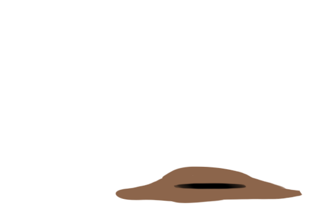
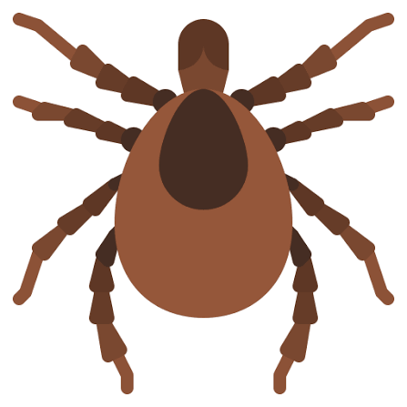
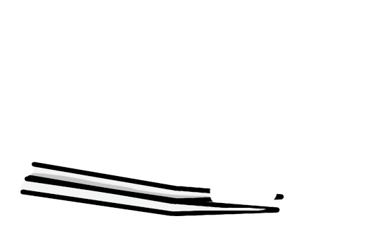
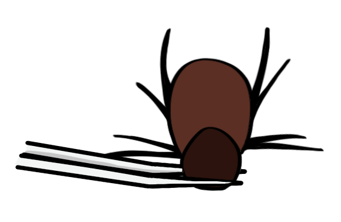
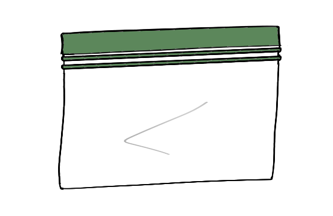
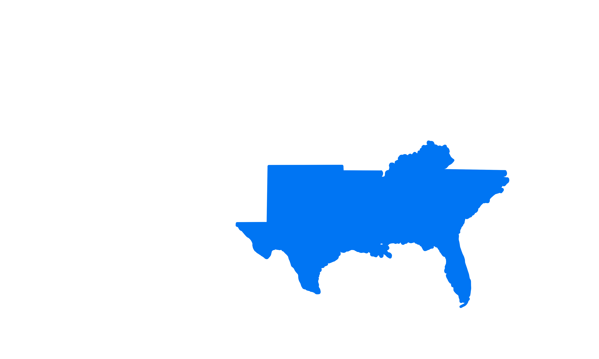

Lyme Disease is an increasingly-common bacterial infection transmitted by ticks with a wide variety of symptoms. When an infection occurs, it’s important to treat it with antibiotics as soon as possible.
Scroll to begin.
Many of the symptoms that develop in Lyme infections appear in other common diseases and are commonly confused with each other - that’s why it’s so hard to nail down a Lyme Disease diagnosis. Also, finding the tick can be really hard.





Move your cursor over the area of interest

A tick bite can hide in tall grass without you ever feeling it.